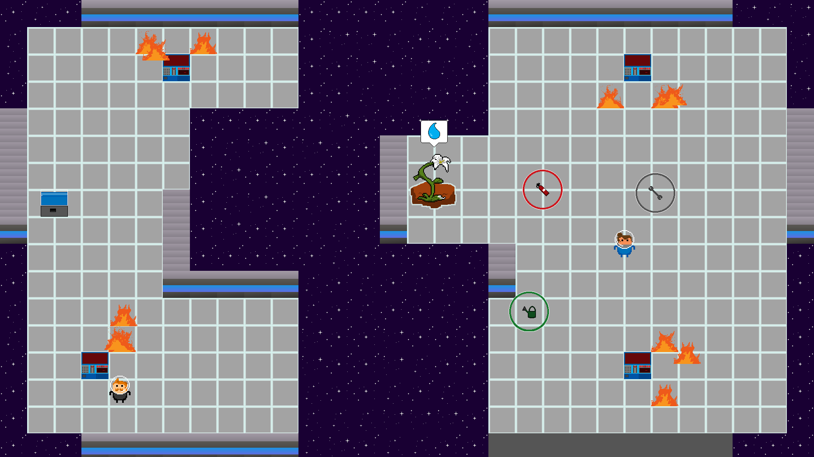

Going Home
Un jeu de gestion coopératif contre la montre
Un projet de Game Jam
Going Home est le jeu que j'ai développé seul pendant la Global Game Jam 2020, qui était sur le thème "Repair". Le jeu est un jeu de gestion de temps et de coopération dans lequel les deux joueurs incarnent des astronautes sur le chemin de retour vers le planète, avec pour mission de rapporter une fleur intacte. Malheureusement, le vaisseau est touché par un astéroïde et scindé en deux, séparant les deux astronautes. Leur but devient alors d'empêcher le vaisseau d'exploser, tout en arrosant régulièrement la fleur pour éviter son flétrissement.
En jeu, les joueurs ont trois choses importantes à surveiller : Les terminaux, les flammes, et évidemment la fleur. Il y a 4 terminaux au total, 2 de chaque côté, et ils explosent régulièrement, les rendant défaillants. Un terminal défaillant va régulièrement démarrer des incendies. Les flammes bloquent le passage des joueurs et ont tendance à ce multiplier de plus en plus vite. La quantité totale de flammes a également un impact sur la vitesse de flétrissement de la fleur, et ainsi une quantité de flammes trop importante peut virtuellement pousser les joueurs au game over, flétrissant la fleur plus rapidement qu'ils ne sont capables de l'arroser, et sont donc une réelle menace, plus qu'un simple obstacle. Pour faire face à ces différents problèmes, les joueurs ont 3 outils à disposition : La clef à molette, l'extincteur et l'arrosoir.
La clef à molette permet de réparer les terminaux, l'extincteur d'éteindre les flammes, et l'arrosoir, une fois rempli à la fontaine, permet d'arroser la plante. À cause de la présence d'un seul outil de chaque, les joueurs vont devoir tirer parti de l'absence de gravité pour se les lancer d'un bord à l'autre du vaisseau. Une fois lancés, les objets rebondissent contre les murs et reviennent de l'autre côté de l'écran quand ils en sortent, et sont en mouvement en permanence jusqu'à ce qu'un joueur l'attrape au vol, ce qui encourage une coopération dans laquelle les deux joueurs sont actifs, et de la communication sur le timing de passe.
Les retours sur le jeu ont été très positifs, et j'ai pu régler quelques bugs mineurs après la fin de la jam et proposer une version légèrement améliorée sur la page itch.io, ainsi que l'accélération (et donc augmentation de la difficulté) graduelle que je n'ai pas eu le temps d'intégrer dans le projet initial. Le développement de Going Home est à priori terminé, étant globalement satisfait du résultat final, et souhaitant me concenter sur d'autres projets.
La version originale de la Global Game Jam est disponible ici.